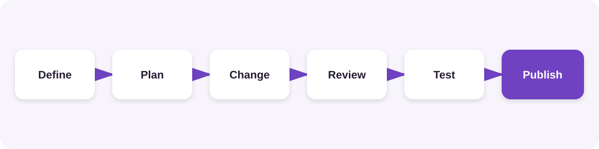
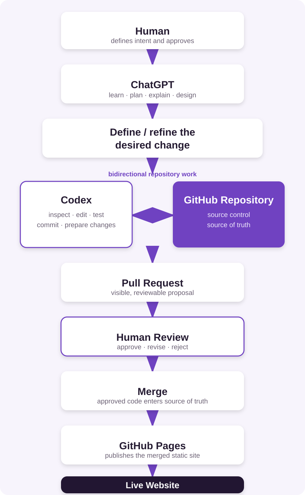

Before you begin
Before creating a homepage, uploading photographs or writing any code, it is worth making a few decisions about how the website will work.
A photography website does not necessarily need a database, a content management system, a web server or a monthly hosting subscription. For a relatively simple portfolio, gallery and blog site, a much lighter architecture can work remarkably well.
This tutorial explains the architecture used throughout this learning path:
Static HTML + Bootstrap + GitHub + GitHub Pages + AI assistance
By the end of this tutorial, you won't have written any code. You will understand what each component does, why it has been chosen, and how the pieces fit together.
Where This Approach Came From
This learning path has its origins on a sun lounger in Kefalonia in the summer of 2024.
The challenge was straightforward: could someone with photographs, an iPhone and very little contemporary web-development experience build and publish their own photography website?
Two existing technologies quickly became central to the answer. The first was Bootstrap.
Bootstrap had been brought to the conversation because of an affection for Twitter in its earlier days and an awareness of the open-source framework that had emerged from the company. Rather than creating every element of a website from scratch, why not build on a mature framework that thousands of developers had already contributed to?
The second was GitHub.
GitHub was initially a less obvious choice. It is widely associated with software developers and source code, but GitHub Pages provides something particularly interesting for a project like this:
That combination gave the project its basic architecture. Two years later, despite considerable changes to the website and enormous changes in AI tooling, that original architectural decision still stands.
Let's build it from first principles.
1Start with the Simplest Thing That Can Work
Before choosing technologies, define what the website actually needs to do.
A photography website might need to:
- Display photographs
- Organise photographs into galleries
- Provide information about the photographer
- Publish occasional articles or blog posts
- Work on phones, tablets and computers
- Use a custom domain
- Be inexpensive to operate
- Be straightforward to maintain
It may not need:
- User accounts
- Online payments
- Customer databases
- Complex server-side processing
- Personalised content
Those requirements would change the architectural decision. But if the browser simply needs to display pages, text and photographs, a static website is worth considering.
2What Is a Static Website?
At its simplest, a web page is an HTML file. For example:
index.htmlcontains the structure and content of the homepage. A small website might consist of:
index.html
gallery.html
blog.html
about.html
contact.html
images/
css/
scripts/When somebody visits the website, their browser requests one of those files and displays it. There is no database generating the page behind the scenes and no content-management system assembling it before it reaches the visitor. The files are the website.
Why is that useful?
Static websites can be fast, cheap to host, relatively secure, easy to back up, easy to understand and highly portable. They also give you direct ownership of the files that make up the site.
What is the trade-off?
Static HTML is not ideal for every website. As a site becomes larger, changing something repeated across dozens or hundreds of pages can become cumbersome. More sophisticated websites may benefit from templates, content-management systems or frameworks that generate pages automatically.
Choose architecture for the problem you actually have, not the problem you might have one day.
For a small photography website, static HTML gives us an excellent starting point.
3Use Bootstrap Rather Than Reinventing the Web
Static HTML gives us pages, but it doesn't automatically give us an attractive, responsive website. This is where Bootstrap comes in.
Bootstrap began as an internal project at Twitter and was released publicly as an open-source project in 2011. It provides reusable CSS and JavaScript components for common website requirements, including navigation bars, buttons, cards, grids, forms, responsive layouts and collapsible mobile menus.
Instead of designing all of these components from scratch, we can use established Bootstrap patterns.
Why use an open-source framework?
A great deal of modern software development involves assembling and adapting reliable components created by others. Open source allows developers to share those components, inspect them, improve them and build upon them.
For someone learning web development with AI assistance, this is particularly useful. Rather than asking an AI:
“Create an entirely new responsive layout system for my website.”
we can say:
“Use Bootstrap's responsive grid system.”
That gives both the human and the AI a common language.
4How Will We Use Bootstrap?
You do not need to download Bootstrap or install development tools to begin. Bootstrap can be referenced from a Content Delivery Network (CDN).
In practice, this means adding references to Bootstrap's CSS and JavaScript to the HTML page. Conceptually, the page becomes:
HTML page
│
├── Bootstrap CSS
├── Your content
└── Bootstrap JavaScriptThe Bootstrap documentation provides the current CDN references and starter templates. In Tutorial 2 — Bootstrap Fundamentals, we'll do this properly and build our first Bootstrap structure.
Use Bootstrap as the responsive front-end framework rather than building every layout component from scratch.
5Store the Website in GitHub
We now need somewhere to keep the website files. This is where GitHub enters the architecture.
GitHub stores software projects in repositories. For our purposes, a repository can simply be thought of as the home for all the files that make up the website.
Photography Website Repository
│
├── index.html
├── gallery.html
├── blog.html
├── about.html
├── contact.html
│
├── images/
├── css/
└── scripts/But GitHub does considerably more than store files. It keeps a history of changes. That means if something goes wrong, you can see what changed and potentially return to an earlier version.
Later in this learning path, GitHub will also allow us to use branches, pull requests, change reviews and Codex. This becomes increasingly valuable as the website grows.
6Publish the Website with GitHub Pages
Storing a website and publishing a website are normally two different things. This is where GitHub Pages makes our architecture unusually simple.
GitHub Repository
│
▼
GitHub Pages
│
▼
Live WebsiteFor a suitable public repository, this can be done without paying for conventional web hosting. That was one of the most surprising discoveries at the beginning of this project in 2024: the same platform storing the website's source files could also publish those files to the web.
For a personal photography site, that removes an entire layer of infrastructure. You can also connect your own domain later, so visitors do not need to know that GitHub Pages is involved at all.
We'll configure this step by step in Tutorial 3 — Setting Up GitHub Pages.
7Where Does ChatGPT Fit?
So far, everything described could be done without AI. That's important.
ChatGPT can act as a combination of tutor, design partner, code generator, troubleshooter and reviewer. Instead of learning HTML, CSS and Bootstrap completely before starting, we can learn them when they become relevant.
For example, rather than spending weeks studying Bootstrap before creating anything, we might ask:
“Create a simple responsive photography homepage using Bootstrap. Explain the purpose of each major section so that a beginner can understand it.”
Then review the result. Ask questions. Change one thing. See what happens.
This is the approach we'll use in Tutorial 4 — Working with ChatGPT.
8Where Does Codex Fit?
ChatGPT is particularly useful when discussing ideas, learning concepts and developing individual parts of the site. As the repository becomes larger, another type of AI assistance becomes useful.
Codex can work with the repository as a codebase.
Instead of copying a single piece of HTML into a conversation and asking for it to be changed, Codex can inspect the relationships between files and propose changes across the project. That makes tasks such as these possible:
- Inspect the repository structure
- Find references to an image
- Update navigation consistently
- Reorganise assets
- Add features spanning several files
- Run validation checks
- Prepare changes for review
Crucially, this does not mean giving an AI unrestricted permission to redesign everything. The approach used throughout this learning path will be:

We'll explore that workflow properly in Tutorial 5 — Working with Codex.
9Put the Architecture Together
We can now see the complete picture.

Each component has a clear responsibility.
- HTML
- provides the content and structure.
- Bootstrap
- provides reusable styling and responsive components.
- GitHub
- stores and versions the website.
- GitHub Pages
- publishes it.
- ChatGPT
- helps you learn, design and create.
- Codex
- helps work safely across the growing repository.
And you remain responsible for deciding what should be built.
10Why This Architecture?
Before moving on, let's test the architecture against our original requirements.
| Requirement | Approach |
|---|---|
| Display photographs | HTML + image files |
| Responsive design | Bootstrap |
| Galleries | Static HTML + Bootstrap |
| Blog | Static HTML initially |
| Store the website | GitHub |
| Version history | GitHub |
| Publish the website | GitHub Pages |
| Custom domain | GitHub Pages |
| Help creating pages | ChatGPT |
| Repository-wide changes | Codex |
| Low hosting cost | GitHub Pages |
| Ownership | Source files remain in the repository |
It is deliberately uncomplicated. That is a feature, not a deficiency.
What You Should Have at the End of Tutorial 1
Nothing to download. Nothing to install. And no code to write yet.
You should simply understand the architecture we're going to build:
Static HTML + Bootstrap + GitHub + GitHub Pages + ChatGPT + Codex
More importantly, you should understand why each component is there. In the next tutorial we'll take the first practical step.